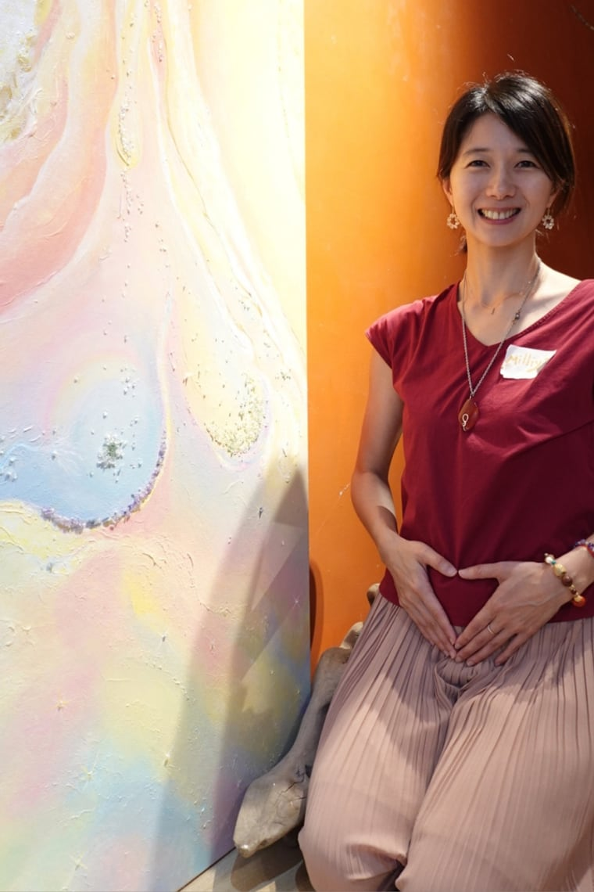

關於我 · About Milliya
兩個孩子的母親、陪產員與女性身心靈整合教練。我把走過兩次溫柔生產的親身經驗，和身心靈的整合視角揉在一起，陪伴每一位女人，用屬於她自己的方式，溫柔地把孩子、也把自己，一起生出來。

我的故事
2019 年，我在德國不來梅的生產中心迎接了老大；2021 年，我在台灣新北的家中，生下了老二。兩次溫柔生產，加上在台日兩地落地、共親職的日常，讓我一次次重新認識「成為母親」這件事——它從來不只是身體的事，而是身、心、靈一起被翻動的生命轉化。
正因為走過，我懂那種既期待又不安、想要資訊卻更想要被理解的心情。於是我成為陪產員與女性身心靈整合教練，把實證的孕產知識，和身心靈的整合視角揉在一起，陪伴每一位媽媽，用屬於她自己的方式，把孩子、也把自己，一起生出來。
我陪伴的方式，是高度客製化的一對一深入交流——沉穩、真實、不做作。我不急著給答案，也不會把妳推向任何「應該」；我想給的，是一個放鬆、從容、不被催促的空間，讓妳在其中，聽見自己真正的聲音。這份對生產與女性的愛，對我而言從來不是一份工作，而是一種使命。
—— Milliya・欣妙
我相信的事
生產不是一場需要被處理的醫療事件，
而是一段值得被好好陪伴的生命轉化。
我相信，當一位女性在孕產裡被真實地理解與支持，她不只是生下了孩子，也重新生出了一個更完整、更有力量的自己。這份對生產與女性的愛，是我做這件事的初心——它不是一份急功近利、以營利為目的的工作，而是一種發自內心的使命。
我的使命：支持並陪伴每一個女人，活出自己的光。
「當女人聚在一起，魔法就會發生。」
我的養成
受訓於國內助產師、孕產顧問及國外孕產教育機構。從接住自己的兩次生產，到一張張把專業補齊——
2022 年至今，已陪伴 20+ 組產家，持續陪產、陪伴女人，並提供孕產與生命教育。